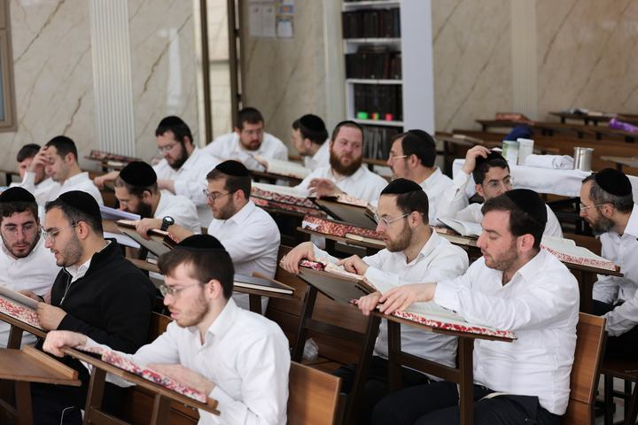

The Kollel Network
Some twenty kollelim and about 1,300 avreichim, alumni of the network's yeshivos, continue to toil in Torah.
Thousands of Hours of Ameilus BaTorah
The Orchos Torah network has some twenty kollelim, where alumni of the yeshivos continue to toil in Torah after their marriage. About 1,300 avreichim learn in them.
Maran Harav Steinman saw the kollelim as the completion of the yeshiva, and encouraged opening them even far from the established centers. Around them, shuls and batei medrash for the yeshiva's alumni are built, carrying the name Orchos Torah.

The Kollelim Across Eretz Yisroel
- Bnei Brak2 branches
- Yerushalayim3 branches
- Modiin Illit3 branches
- Beitar Illit
- Telz Stone
- Rechasim
- Otzem
- Karmiel
- Elad
- Nof HaGalil
- Beit Shemesh
- Afula
From the World of the Kollel
Support Limud HaTorah in the Kollel Network
עֵץ חַיִּים הִיא לַמַּחֲזִיקִים בָּהּ"It is a tree of life to those who uphold it" · Mishlei 3:18
Every donation supports lomdei Torah: an hour of learning, a day, a week or a month, across the network or at this institution.